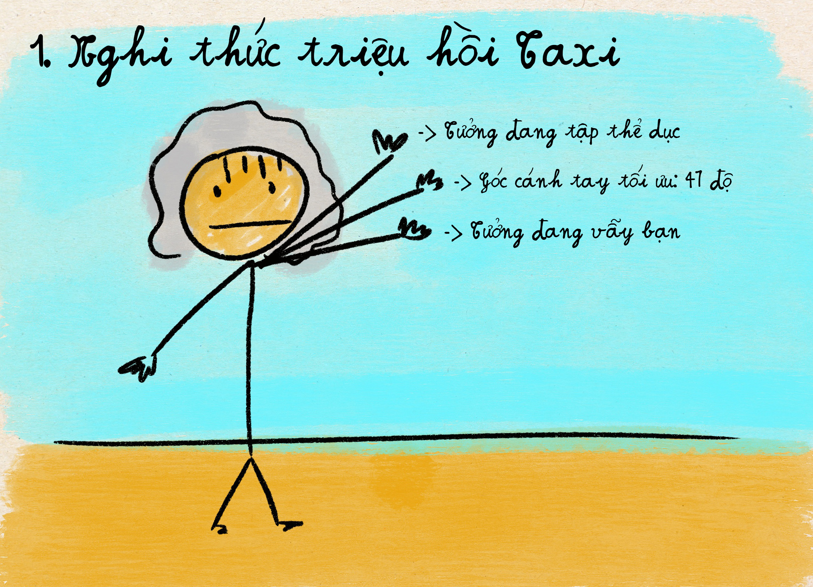
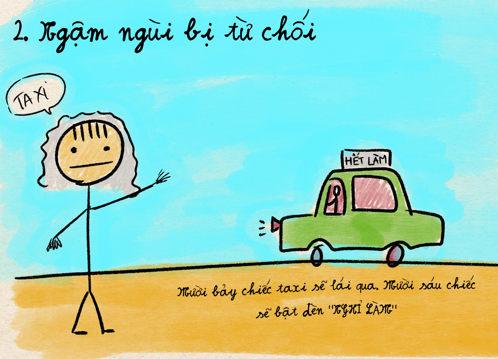
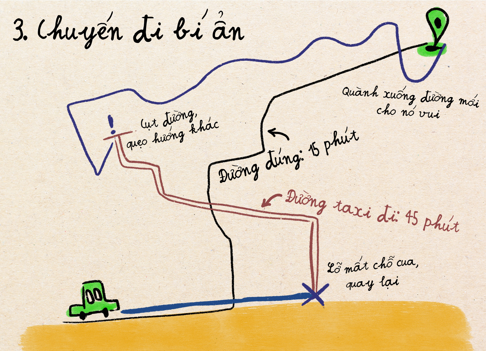
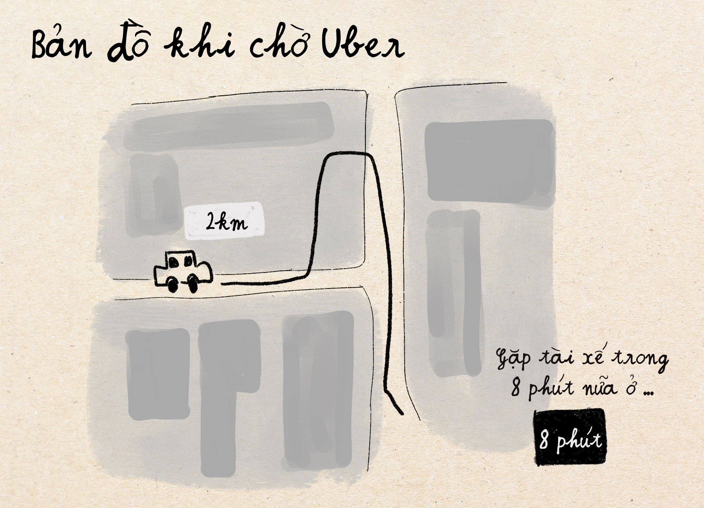
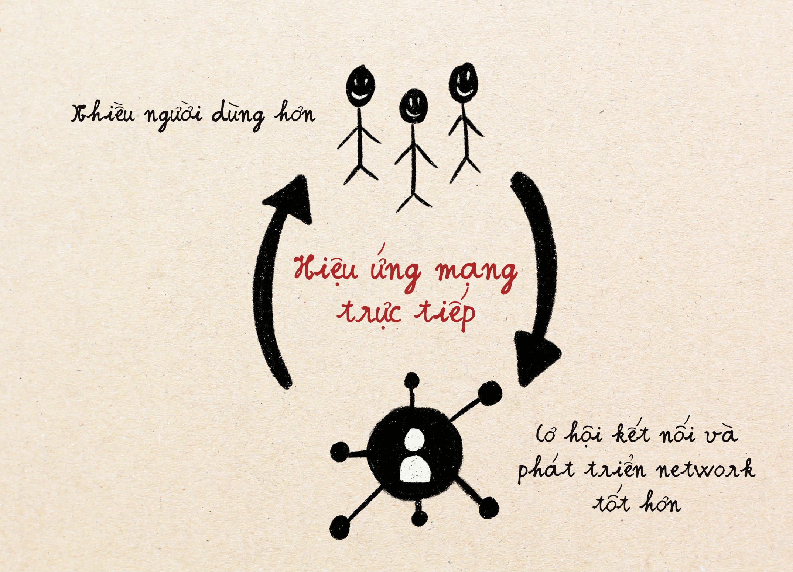
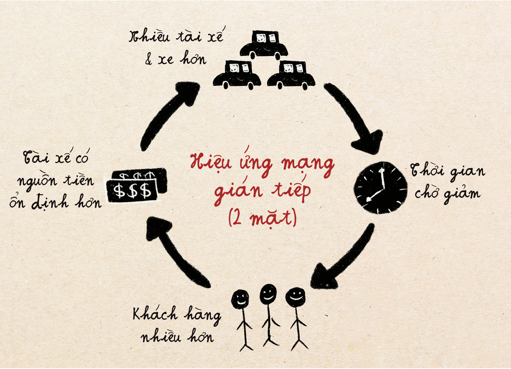
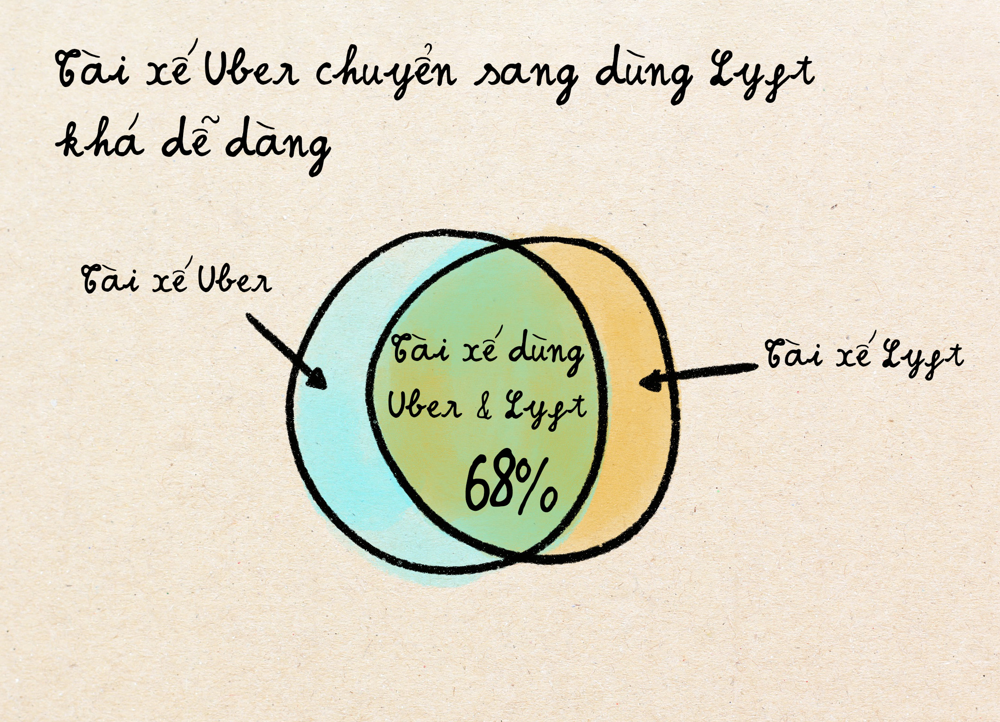
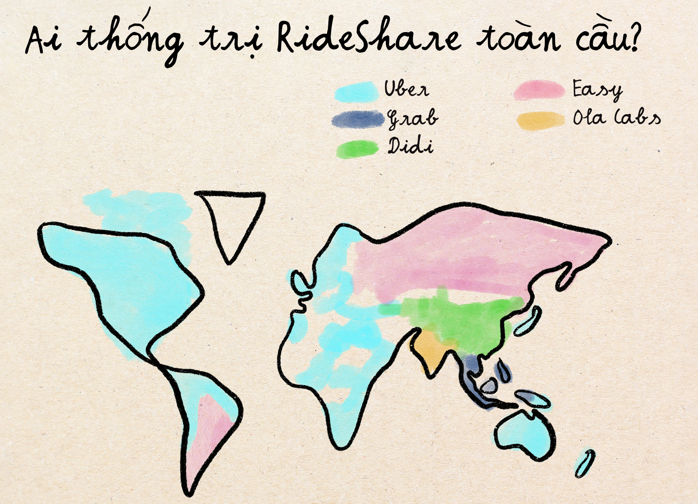
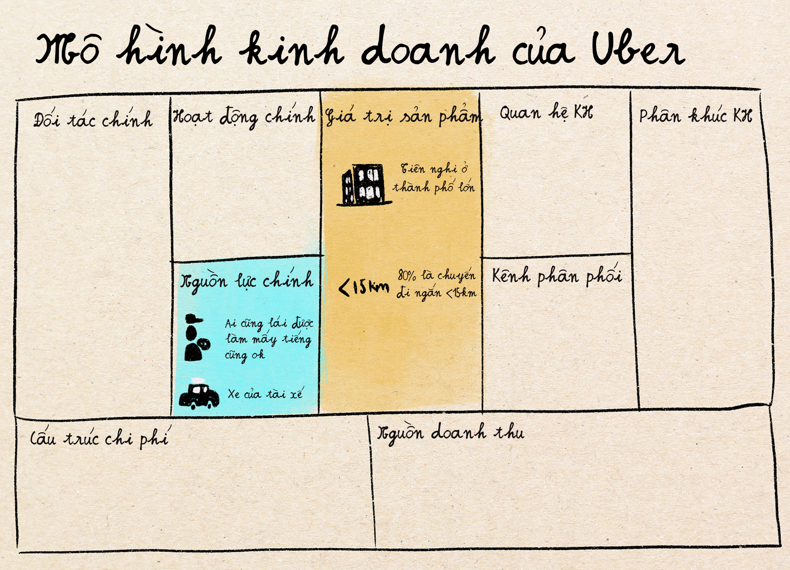
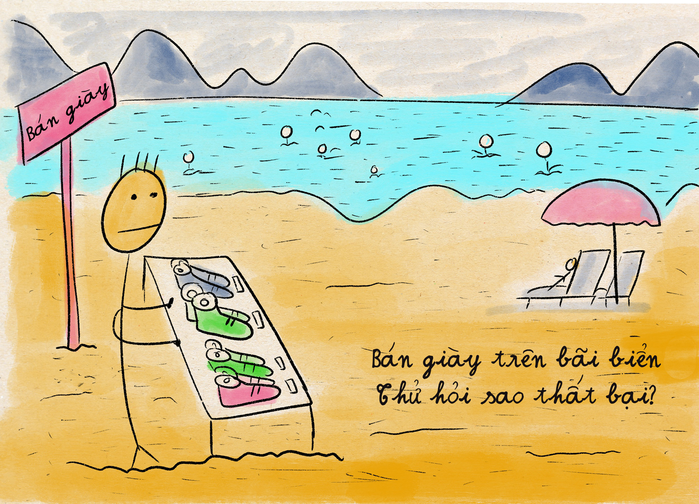

Cuộc Cách Mạng Uber: Cách Một App Viết Lại Luật Chơi Giao Thông
Đế chế taxi cũ
Nghe thì như ngày hôm qua ý nhưng năm 2008, là cách đây 20 năm rồi đó nha. Đi ngược thời gian vào thời điểm đó khi mà việc gọi taxi ở bất kỳ thành phố lớn nào cũng giống như chơi trốn tìm vậy: bạn là người tìm và taxi là người trốn. Quy trình nó diễn qua 4 bước như thế này:
Bước 1: Nghi Thức Triệu Hồi Taxi.
Bạn sẽ đứng ở góc đường thực hiện "Điệu múa dụ Taxi"— Tư thế vẫy taxi của bạn phải vừa phải thôi nha. Thấp quá thì mấy ông Taxi nghĩ bạn đang vẫy bạn bè. Cao quá thì người ta tưởng bạn đang tập thể dục. Bạn mà như tui một đứa ngại hoa tay muá chân trên đường phố thì cái điệu này nó xấu hổ lắm. Nhưng mà nhiều năm luyện tập thì có thể bạn hiểu ra góc cánh tay tối ưu để gọi taxi là: 47 độ.
Bước 2: Ngậm ngùi vì bị từ chối.
Mười bảy chiếc taxi sẽ lái qua. Mười sáu chiếc sẽ bật đèn "NGHỈ LÀM". Chiếc thứ mười bảy sẽ chậm lại, nhìn bạn để đánh giá đi gần hay đi xa, rồi tăng tốc bỏ đi như thể bạn vừa nói với họ rằng bạn muốn đi lên Vĩnh Phương 30km xa thành phố.
Bước 3: Một chuyến đi bí ẩn.
Cuối cùng thì chiếc taxi thứ 18 dừng lại đón bạn, nhưng niềm vui đó chỉ là một khoảnh khắc hân hoan ngắn ngủi. Bạn lên xe, và tài xế sẽ bắt đầu một hành trình đáng lẽ ra chỉ 15 phút nhưng không hiểu thế nào lại biến thành 45 phút qua những khu phố mà nhiều khi bạn không biết là tồn tại trong thành phố của bạn luôn.
Bước 4: Đau đớn khi thanh toán.
Đồng hồ tính cước sẽ hiển thị một con số dường cứ như được tính toán bởi một người say rượu. Đang 90 chục ngàn nhảy lên 112 ngàn, rồi 131 ngàn. Cứ thế mà lên. Lúc đến nới rồi thì nhiều lúc tiền mang theo không đủ.

Ngành taxi những năm ấy về cơ bản là một đế chế điều hành bởi những người quyết tâm không hiểu và cũng không quan tâm dịch vụ khách hàng là gì. Và với khách hàng thì chỉ có thể chấp nhận mà thôi vì có cách nào khác đâu. Nó giống như sống trong một thế giới mà khi bạn đi nhà hàng họ có thể từ chối phục vụ bạn, tính tiền theo như họ muốn và mỗi lần ăn thì thời gian chờ lại khác nhau.
Thử nghĩ xem những năm 2009 ở Mỹ, ai cũng có thể đặt gọi pizza bằng điện thoại, xem phim trên mạng Internet, và cả video chat với người thân ở những đất nước khác. Nhưng muốn đi taxi thì phải đứng góc đường vẫy tay như những gã điên. Và trong nhiều thập kỷ, ai cũng đều chấp nhận sự thật của ngành taxi đó như một phần của đời sống đô thị.
Uber Xuất Hiện
Vào năm 2019, hai chàng trai trẻ ở thành phố San Francisco—Travis Kalanick và Garrett Camp—một ngày đẹp trời vật vã gọi mãi taxi không được. Như tui với bạn thì chắc đứng đó ngậm ngùi trong cơn tức giận, lầm bầm một hồi thì cuối cùng cũng đành xách dép đi bộ về nhà, thì Travis với Garrett có một ý tưởng khác; họ tự hỏi nhau: có thể làm cho việc gọi taxi dễ dàng hơn như bấm một cái nút điều khiển tivi không?
Cùng năm 2009, họ ra mắt UberCab, sau này gọi là Uber.
Thời điểm đó, để được phép lái taxi trong thành phố, một anh tài xế ở New York sẽ cần tới gần 1,3 triệu đô la Mỹ, là hơn 25 tỷ VNĐ để xin đủ thể loại giấy tờ như giấy phép lái xe thương mại, giấy phép kinh doanh trong thành phố, bảo hiểm thương mại, và qua nhiều thủ tục kiểm duyệt cho xe. Toàn bộ quá trình mất từ 6 tháng tới 2 năm để hoàn tất và trở thành người lái xe taxi. Không biết cày bao nhiêu năm mới lấy lại được số tiền đó.

Khi Uber nhảy vào cướp lấy đi thị phần xe taxi, tất nhiên các ông hoàng đế chế taxi phải đi kiện ngay và luôn. Phản ứng của Uber thì rất thản nhiên: Tụi tui đâu phải là công ty taxi, mà là nền tảng công nghệ, là môi giới giữa người lái xe và người đi xe thôi. Uber chọn cách né cuộc đấu trực tiếp với các hãng taxi và mở ra một thể loại kinh doanh khác hẳn, và vì thế né được nhiều luật pháp ràng buộc mà các hãng taxi phải chịu. Tài tình y như chuột Jerry né mèo Tom.
Tưởng tượng cuộc kiện tụng xảy ra thế này:

Lỗ hổng mà Uber tìm ra đó là: nếu về mặt kỹ thuật bạn không phải là công ty taxi, quy định taxi sẽ không thể áp dụng cho bạn. Giống như xem ai đó thắng cờ vua bằng cách khăng khăng họ đang chơi cờ cá ngựa.
Bài học từ trận chiến thương trường này đó là: Để vượt qua những ông trùm đã thống lĩnh thị trường, bạn phải tạo ra một định nghĩa một thị trường và mô hình kinh doanh mới để thống trị lĩnh vực đó. Đừng nhảy vào thị trường với những quy luật đặt ra sẵn.
2 Phát minh khiến Uber thay đổi hoàn toàn cuộc chơi
Không chỉ sáng tạo về mô hình kinh doanh đâu, Uber có những sáng tạo khác rất độc.
Bắt đầu từ: cách điều khiển tâm lý người đi xe.
Cùng Trân phân tích tâm lý người dùng trước vào sau khi Uber xuất hiện nha.
Trước Uber, mỗi lần đi taxi cũng giống như một cuộc thi chờ dài dằng dặc. Chờ không biết khi nào taxi tới.
Uber giải quyết vấn đề này không chỉ bằng công nghệ kết nối tài xế với khách hàng, mà họ còn dùng "Tâm lý học". Để khiến cho khách hàng cảm giác như việc chờ đợi không quá tệ, họ có bản đồ để người ta theo dõi tài xế đang ở đâu và sắp đến trong vòng mấy phút.
Theo như mô phỏng của công ty Oglyvy thì để đạt được 80% đánh giá hài lòng từ khách hàng thì
- Một là bạn có 1 xe với bản đồ theo dõi quá trình xe đến đón khách và thời gian chờ giữ nguyên.
- Hoặc là bạn cần phải có 2980 xe trên đường sẵn sàng chờ khách để đảm bảo thời gian chờ ngắn lại.
Ta có thể giải thích cái thiết kế trông có vẻ đơn giản này bằng 2 hiệu ứng tâm lý học:
- Cảm giác có kiểm soát giúp giảm đi lo lắng. Theo nghiên cứu của Thompson vào năm 1981, con người ta nếu cảm thấy có thể kiểm soát tình huống thì sẽ giảm hẳn căng thẳng, kể cả khi thực tế không hề thay đổi.
- Cảm nhận tiến độ giúp tăng độ hạnh phúc. Nghiên cứu năm 1932 cho thấy con người sẽ thường vui vẻ và có động lực hơn khi mà họ thấy mình đang tiến gần hơn tới mục tiêu của bản thân. Việc xem biểu tượng cái xe Uber tiến gần hơn tới vị trí của người chờ sẽ tạo ra cảm giác "có tiến độ" này.
Sáng tạo tuyệt vời thứ hai của Uber là Định giá động
Trước khi có Uber, ở New York vào đêm 30 tết thì rất nhiều người đi đường chơi nhưng đường thì lại rất ít taxi, vì tài xế người ta về nhà với gia đình hết rồi. Vì taxi chỉ có thể lấy giá cố định như các ngày khác, đêm giao thừa chả ai muốn làm việc. Thế cho nên, chúc bạn may mắn vẫy gẫy tay tìm taxi nhé.
Khi Uber vào cuộc, họ giới thiệu một phương pháp mới: giá đột biến, tiếng anh là Surge pricing. Cách nó hoạt động thế này: Khi nhu cầu đi tăng đột biến, thì giá cũng sẽ tăng lên. Và giá cao hơn thì sẽ có nhiều tài xế muốn đi làm hơn để kiếm tiền cao, vì thế lượng cung cũng tăng lên. Tất nhiên giá cao hơn thì người muốn đi cũng giảm. Cung tăng, cầu giảm cho tới khi ta đạt được tới sự cân bằng cung cầu.

Nói thực ra đây cái kiến thức cân bằng cung cầu ai mà học kinh tế là học được từ ngay những ngày đầu tiên luôn đó. Nó không hề xa lạ. Nhưng giải pháp này chưa ai dám làm trước khi Uber xuất hiện vì với nhiều khách hàng, để giá cao thế chả khác nào "cướp đường". Nhưng với Uber, nó chỉ là một cách đơn giản để giải quyết vấn đề mà các công ty Taxi hơi ngu không giải quyết được. Ở New York đêm giao thừa có những lần giá tăng tới 5-6 lần. Mà vẫn có rất nhiều người chịu trả giá đó thôi. Còn hơn là xách dép cuốc bộ về nhà.
2 Hiệu ứng kinh tế quan trọng nhất bạn cần học từ Uber
Phần này thì nó mang tính "kiến thức" hơi nặng hơn một tí thôi nè, nhưng mà rất quan trọng cho các bạn khi muốn phân tích chiến lược kinh doanh trong nhiều mảng khác nhau.
Thứ nhất là hiệu ứng mạng (Network effect)
Là hiện tượng khi mà giá trị của sản phẩm tăng lên khi có nhiều người dùng hơn. Như Facebook chẳng hạn, càng có nhiều người dùng tham gia thì người dùng hiện tại càng thấy nó giá trị hơn vì họ có cơ hội kết nối và phát triển network của mình. Đây là cách mà nhiều mạng xã hội đi lên.
Hiệu ứng này khi áp dụng vào Uber thì hơi khác, vì thay vì chỉ có một nhóm người dùng, ở Uber có hai nhóm: tài xế, và người đi xe. Càng có nhiều người đi xe thì sẽ thu hút nhiều tài xế hơn. Nhiều tài xế thì thời gian chờ ngắn hơn, và vì thế thu hút nhiều khác hàng hơn. Và cứ thế tiếp tục. Loại hiệu ứng mạng lưới hai mặt (two-sided network effect) này là cách mà các nền tảng thương mại điện tử như Amazon, Shoppie, Etsy, v.v. đi lên.
Hiệu ứng mạng quan trọng trong kinh doanh là vì khi một công ty nào đã đạt được số lượng người dùng đủ thì hiệu ứng này có thể trở thành rào cản ngăn đối thủ cạnh tranh mới vào cuộc. Vì các đối thủ mới không thể xây được hệ thống rộng rãi ngay từ đầu, người dùng cũng không có lý do để nhảy sang sử dụng một sản phẩm với hệ thống nhỏ hẹp hơn sản phẩm đi trước.
Ít nhất đây là sức mạnh của hiệu ứng mạng mà ai cũng tin cho tới khi công ty Lyft xuất hiện. Lyft cạnh tranh với Uber và kiếm được 30% thị phần tại Mỹ, bằng cách nhắm vào các khu vực mà Uber chưa có mạng lưới quá rộng. Cộng thêm việc tài xế có thể dễ dàng phục vụ cả hai ứng dụng Uber và Lyft cùng lúc, Lyft không có vấn đề nhiều về việc thu hút nguồn lực tài xế và xe. Trong kinh doanh khái niệm này được gọi là low switching cost, nghĩa là chi phí chuyển đổi thấp. Theo thống kê, khoảng 68% tài xế sử dụng nhiều nền tảng cùng lúc và 40% hành khách so sánh giá ở nhiều nền tảng khác nhau trước khi đặt xe.
Sức mạnh của hiệu ứng mạng cũng dần giảm đi khi các mạng xã hội bắt đầu trở nên giống nhau hơn khiến chi phí chuyển đổi thấp hơn hẳn. Ví dụ như hồi trước một người sáng tạo nội dung mà chuyển từ làm Facebook sang làm Youtube thì không dễ vì họ phải tạo ra nội dung viết và hình cho Facebook, nhưng phải làm video dài trên Youtube. Làm cả hai sẽ rất mất công. Nhưng trong những năm vừa qua, từ Facebook tới Instagram, Tiktok, và Youtube, bên nào cũng thi nhau thúc đẩy thể loại video ngắn. Thế nên nếu người sáng tạo nội dung đã làm một video ngắn rồi thì chi phí để đang lên hết các nền tảng cùng lúc là khá thấp. Vì thế mà dù cho các mạng xã hội này có hiệu ứng mạng tốt, vì việc tham gia các mạng khác trở nên khá dễ, hiệu ứng này không còn có sức mạnh rào cản tốt như trước nữa.
Thứ hai là hiệu ứng Domino
Đây là hiệu ứng khiến cho Uber đi vào lịch sử. Khi Uber chứng minh được thành công trong mô hình kinh doanh của mình thì khắp toàn cầu, không chỉ các công ty cạnh tranh mọc lên, mà còn rất nhiều các công ty khác mô phỏng theo mô hình kinh doanh này. Thế cho nên người ta mới có dùng câu "Uber, nhưng mà ABC".
Uberization là quá trình đưa mô hình kinh doanh ứng dụng công nghệ, giống như Uber, vào các ngành dịch vụ truyền thống, giúp kết nối khách hàng và nhà cung cấp dịch vụ một cách nhanh chóng, hiệu quả và tiết kiệm chi phí. Trong tiếng Việt, thuật ngữ này thường được gọi là "uber hóa" hoặc "quá trình uber hóa"
Ví dụ nhé:
- Lyft nổi lên như một "Uber, nhưng mà thân thiện hơn"
- Grab là Uber của Đông Nam Á. BlaBlaCar là Uber, nhưng cho đường dài.
- Doordash là Uber, nhưng cho vận chuyển thức ăn
- Instacart là Uber, nhưng để vận chuyển mua hàng siêu thị
- TaskRabbit là Uber, nhưng cho dịch vụ trong nhà
- SpotHero: Uber, nhưng cho việc tìm chỗ đỗ xe
- Vân vân và mây mây.
Phương pháp "Uber" trở thành một mô hình lan truyền như virus lây lan khắp toàn cầu.
Nghịch lý
Nghe thì có vẻ Uber rất thành công đó, nhưng bạn có biết là công ty Uber mặc dù định giá trị là 70 tỷ đô la, họ vẫn không sinh ra được lợi nhuận ở phần lớn các thị trường quốc tế. Trong khi đó, BlablaCar, có thể là bạn chưa nghe tới luôn, là Uber nhưng cho các chuyến đường dài, đã có lãi ở 22 quốc gia khác nhau, với số tiền đầu tư vào công nghệ chỉ bằng một phần nhỏ của Uber.
Thậm chí còn khó hiểu hơn: Uber kiểm soát tới 70% thị trường Bắc Mỹ, nhưng DiDi lại sở hữu 90% thị trường Trung Quốc. Grab thống trị Đông Nam Á, v.v. Mặc dù có những thuật toán tiên tiến nhất và túi tiền sâu nhất, Uber phải rút lui khỏi các thị trường này hoặc bán lại hoạt động của họ cho các đối thủ địa phương với những khoản lỗ khổng lồ.
Lý do tất cả là xoay quanh mô hình kinh doanh. Một mô hình chiến lược kinh doanh có rất nhiều khía cạnh sâu hơn mà những gì mình vừa nói vừa rồi thực ra chưa đủ sâu để hiểu được thất bại của Uber ở nhiều thị trường khác. Vậy thì đào sâu với mình hơn một tí nhé!
Khi phân tích mô hình kinh doanh thì người ta thường sử dụng bản vẽ mô hình kinh doanh trông nó như thế này – có 9 yếu tố khác nhau. Như mình sẽ giới thiệu 2 yếu tố quan trọng nhất khi nói tới kinh doanh của Uber và các công ty kiểu này.
Thứ nhất là "key resource" (các nguồn lực chính)
Ở đây là xe, và tài xế.
Về phần xe:
- Uber tại Mỹ thì dùng xe của tài xế. Có nghĩa là Uber không phải trả đồng nào để mua hay thuê dàn xe, trả tiền sửa chữa, tìm chỗ đậu xe, v.v. Cách chọn xe này khá ổn vì thông thường ở Mỹ mỗi gia đình đều có xe hơi và thường được bảo trì khá tốt.
- Trong khi đó Didi, công ty ở Trung quốc thì lại hợp tác với các đội xe chuyên nghiệp. Nó thích hợp hơn vì hiếm người dân thường có xe hơi chất lượng cao. Và nhiều người còn không có xe nữa. Thế nên chọn một đội xe chuyên nghiệp sẽ dễ hơn.
Về phần tài xế:
- Uber thì ai cũng có thể làm tài xế và làm bao nhiêu tiếng một tuần cũng được. Thế nên Uber thu hút nhiều tài xế đủ thể loại, kể cả những người có công ăn việc làm khác, chỉ muốn kiếm thêm tiền vào lúc nghỉ. Nhưng việc kiếm tài xế xe hơi ở các nước đông nam á chẳng hạn thì không hề dễ. Ngoài những tài xế chuyên lái xe, những người lái xe hơi thì toàn là người có tiền và không ai lại đi lái thuê cả.
- Grab thì cho phép cả tài xế xe máy luôn, hạ thấp đi rào cản tham gia và cũng thích ứng với giao thông ở đông nam á.
Thế thì khi Uber đi tới các thị trường khác mà không thay đổi cách nhìn về tìm kiếm nguồn lực, thì làm sao có thể tìm đủ tài xế xe hơi với xe có chuẩn mực cao như thị trường Mỹ. Vì thế, tính về nguồn lực chủ chốt không thì chiến lược đã không phù hợp rồi.
Thứ hai là Value proposition (giá trị của dịch vụ/sản phẩm)
Nhìn qua thì cứ tưởng Uber, Lyft, và Grab, Didi có sản phẩm dịch vụ khá giống nhau nhưng thực tế là khác nhau rất nhiều.
- Uber phần lớn là phục vụ thị trường các thành phố lớn, với 80% chuyến đi sẽ dưới 15 km, với mật độ đi cực cao để tiết kiệm cho tài xế.
- Blablacar ở châu âu thì chủ yếu tập trung vào các chuyến đi đường dài liên tỉnh với trung bình chuyến đi dài 350km. Trong những chuyến đi đường dài này thì tiết kiệm chi phí cho cả tài xế và người đi là quan trọng nhất, và giao lưu tương tác tốt giữa người lái và người đi cũng sẽ giúp tăng giá trị của chuyến đi.
- Grab với Didi thì không chỉ là ứng dụng giúp đi lại, mà chọn trở thành siêu ứng dụng kết hợp với các dịch vụ khác như ví tiền online, giao hàng, v.v.
Uber nhắm đúng vào nhu cầu trong đô thị lớn tại Mỹ, nhưng dịch vụ lại không đủ đánh vào nhu cầu khác biệt và đa dạng ở các thị trường khác. Điều này giải thích khoản lỗ 2 tỷ đô la của Uber tại Trung Quốc trước khi bán cho DiDi.
Tất nhiên ngoài hai mảng chính trong mô hình kinh doanh trên, một chủ chốt nữa khiến Uber thất bại là vì họ không làm theo các luật lệ về giá cả, quy định về thu thập dữ liệu ở các quốc gia khác, và cũng không có được mối quan hệ tốt với chính quyền địa phương.
Bài học quan trọng ở đây là: chỉ sở hữu một công nghệ vượt trội mà không có chiến lược kinh doanh phù hợp với nhu cầu của thị trường thì không đủ để thành công được. Bài học này là cực kỳ quan trọng không chỉ trong ngành vận tải mà bất kỳ ngành nào khác.
Tóm lại
Nếu bạn là một nhà quản lý sản phẩm hoặc doanh nhân, hai điểm chính cần ghi nhớ:
- Thay đổi cuộc chơi: khi bước vào một thị trường đã có các tay chơi lớn, bạn phải thay đổi luật chơi và tập trung vào những điểm khác biệt nổi bật.
- Ngoài công nghệ, bạn còn cần phải suy nghĩ sâu về chiến lược. Những lựa chọn khác biệt về các khoản chính trong mô hình kinh doanh có thể giúp bạn trở nên khác biệt và thành công, ngay cả khi ý tưởng hoặc công nghệ nghe thì có vẻ giống nhau.